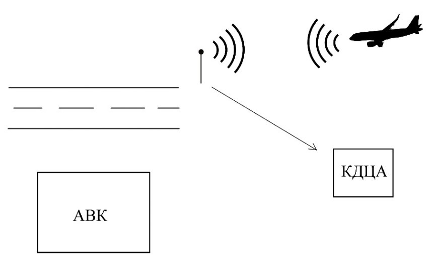
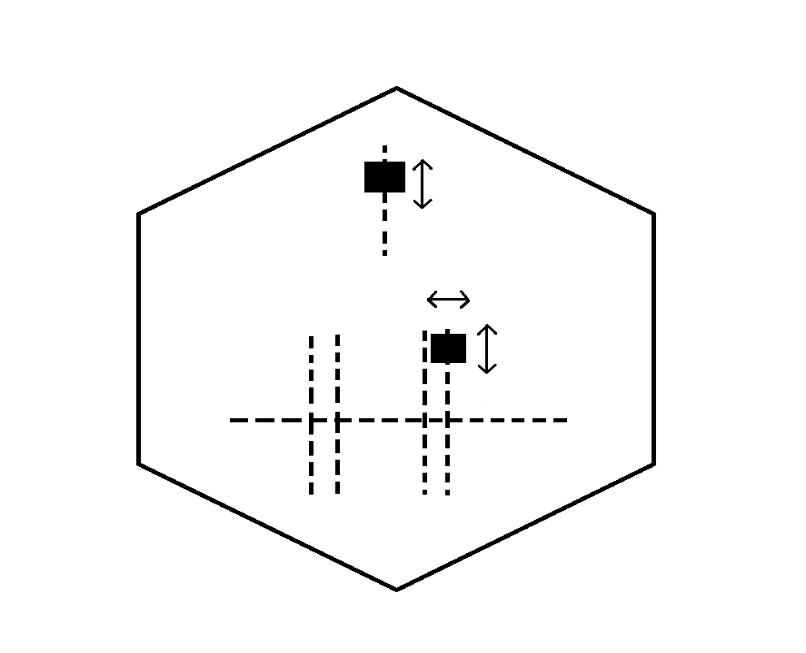
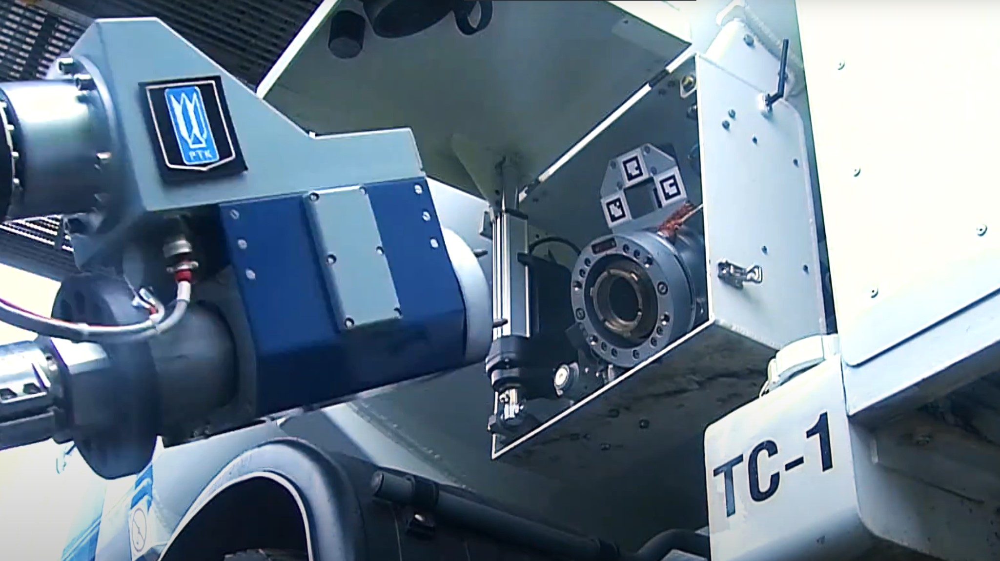

Список исполнителей
Студент 1 курса факультета высшей школы аэронавигации ФГБОУ ВО
«Санкт-Петербургский государственный университет гражданской авиации имени
Главного маршала авиации А.А. Новикова»
E-mail: spbris14@mail.ru
Реферат
Сведения об объеме: основная часть отчета с введением и заключением – 23
страниц, 18 рисунков, 2 главы, 14 использованных источников.
Ключевые слова: интеллектуализация, аэродром, аэродром, воздушное судно.
Объектом исследования являются процессы наземного обслуживания воздушного
судна.
Предметом исследования является – интеллектуализация и цифровизация
процессов наземного обслуживания.
Цель работы заключается в поиске способов цифровизации наземного
обслуживания для повышения скорости их реализации, повышения уровня
безопасности при наземном обслуживании и сокращения требуемых ресурсов для
реализации этих процессов.
Задачи работы:
- Рассмотрение этапов наземного обслуживания
-
Поиск идей для цифровизации производственных процессов в различных
сферах деятельности
- Описание способов их внедрения в авиационную сферу
- Составление выводов
В ходе исследования были использованы теоретические методы: анализ,
аналогия, индукция, прогнозирование и практические методы: измерение,
сравнение, обобщение.
Область применения: автоматизация процессов наземного обслуживания
воздушных судов.
Значимость: повышение скорости проведения наземного обслуживания ВС,
повышение уровня безопасности при наземном обслуживании и сокращение
требуемых ресурсов для реализации этих процессов.
Определения
Аэродром – участок земли или акватория с расположенными на нем зданиями,
сооружениями и оборудованием, предназначенный для взлета, посадки, руления
и стоянки воздушных судов (ВЗК РФ Статья 40)
Аэропорт – комплекс сооружений, включающий в себя аэродром, аэровокзал,
другие сооружения, предназначенный для приема и отправки воздушных судов,
обслуживания воздушных перевозок и имеющий для этих целей необходимое
оборудование (ВЗК РФ Статья 40)
Место стоянки (далее - МС) - подготовленная площадка для размещения и
обслуживания воздушного судна. Место стоянки может быть индивидуальным или
групповым. (ВЗК РФ Статья 40)
Электропитание объектов аэродрома - подача электроэнергии от щитов
гарантированного электропитания к объектам управления воздушным движением,
радионавигации, посадки и связи. (ВЗК РФ Статья 40)
Обозначения и сокращения
АВК – Аэровокзальный комплекс
ВС – Воздушное судно
ГСМ – Горюче-смазочные материалы
КДЦА – Координационно-диспетчерский центр аэропорта
МС – Место стоянки
Введение
Основными факторами для улучшения наземного обслуживания, являются
безопасность, стабильность, эффективность и экономичность.
Внедрение ресурсов автоматизации в эти процессы позволяет улучшить все
вышеперечисленные факторы. Объединяющим звеном всех технических элементов
будет являть операционная система, управляемая оператором или использующая
готовые алгоритмы. Данная система будет связана со всеми элементами,
участвующими в процессе обслуживания. Для функционирования данной системы,
все технические единицы должны быть оборудованы GPS датчикам, сенсорами и
процессорами, обрабатывающими информацию, получаемой с сенсоров, для
возможности автономного функционирования этой техники. Также должна
существовать карта наземный и воздушных маршрутов для создания
упорядоченного движения техники по аэродрому.
В связи с этим, рассмотрение проблемы интеллектуализации процессов
наземного обслуживания воздушного судна в аэропортах требует решения на
следующих принципах:
- Наличие техники, подходящей по функциональным возможностям
-
Наличие системы, отвечающей за реализацию автономного управления
процессами наземного обслуживания ВС
- Наличие квалифицированного персонала для обслуживания техники
-
Наличие системы учета ошибок, с дальнейшим улучшением функционирования
системы
Эффективность работы операционной системы зависит от качественной работы
техники в следующих этапах наземного обслуживания:
Таблица 1 – Методы интеллектуализации этапов наземного обслуживания
| Этапы наземного обслуживания |
Интеллектуализация |
| Получение информации о прибывающем ВС |
Локаторы |
| Подготовка/осмотр МС |
Видеосистема наблюдения |
| Подготовка/осмотр МС |
Видеосистема наблюдения |
| Встреча ВС |
Автономный буксировщик |
| Установка упорных колодок |
Стационарной системы фиксации ВС на МС |
| Установка конусов безопасности |
- |
| Осмотр ВС |
Дрон для осмотра ВС |
| Подключение электропитания |
Мобильные «роботы-заправщики» |
| Установка трапа/телетрапа |
- |
| Доставка пассажиров |
Беспилотные автобусы |
| Погрузка/разгрузка груза, почты, багажа, борт питания |
Роботизированные устройства для обработки багажа, грузовые
беспилотники
|
| Заправка ГСМ |
Роботизированный топливозаправочный комплекс |
| Обслуживание санузлов |
Грузовой беспилотник, автоматизированная система обслуживания
санузлов
|
| Заправка водой |
Грузовой беспилотник, автоматизированная система заправки водой
|
| Уборка салона ВС |
Роботы пылесосы |
Получение информации о прибывающем рейсе
После получения информации о прибытии рейса система связывает и приводит в
рабочую готовность технику необходимую для обслуживания ВС, опираясь на
штатное расписание прилётов и вылетов. Также она проверяет наличии и
состояние необходимой техники и сверяет время фактического прибытия со
временем, указанным в расписании для дальнейшей корректировки своей
работы.
При получении сигнала о прилетающем ВС, система начинает своё
функционирование по заранее подготовленному техническому графику
обслуживания.

Рисунок 1. Система получения информации о прибывающем ВС
Подготовка и осмотр места стоянки ВС
С помощью видеокамер, установленных около мест стоянок система оценивает
готовность МС для установки ВС. В случае каких-то неполадок, система даёт
сигнал о необходимости очистки МС.
Рисунок 2. Система наблюдения за процессом наземного обслуживания ВС
Встреча ВС
К месту прибытия ВС отправляется автономный буксировщик для дальнейшего
заруливания ВС к МС.
Рисунок 3. Работа автономного буксировщика
Пример технологии:
-
Американская компания TNA Aviation Technologies для перемещения
пассажирских самолетов с максимальной взлетной массой от 9 до 60 т
предлагает использовать буксировщик-робот Tugmaxxe. Поворотная платформа
может вращаться на 360°, благодаря чему робот способен развернуть
воздушное судно практически на одном месте без необходимости поворота
передней стойки шасси. Кроме дистанционного управления
роботом-буксировщиком можно управлять в полуавтоматическом режиме.
Рисунок 4. Автономный буксировщик
-
Робот-буксировщик Mototok имеет непревзойдённые показатели
маневренности, так как расположен на оси вращения передней стойки шасси
и может повернуть её буквально на месте, в то время как буксировщику с
классическим «водилом» для изменения угла поворота стойки требуется
движение вперёд, что значительно увеличивает радиус поворота.
Рисунок 5. Робот-буксировщик Mototok
Рисунок 6. Робот-буксировщик Mototok
Установка упорных колодок под колёса шасси ВС
Возможность автономной установки упорных колодок может быть реализована с
помощью стационарной системы фиксации ВС, которая будет устанавливать
блоки фиксации стоек шасси и иметь возможность перемещать эти блоки для
фиксации разных типов ВС.

Рисунок 7. Стационарной система фиксации ВС
Установка конусов безопасности
При полной автоматизации процессов обслуживания ВС установка конусов
безопасности станет ненужной.
Осмотр ВС
Осмотр ВС будет проводится с помощью дрона. Он будет сканировать ВС и
выявлять наличие повреждений.
Пример технологии:
-
Авиакомпания Korean Air разработала систему визуального контроля
самолетов с помощью дронов. Воздушное судно инспектируется четырьмя
дронами одновременно, каждый из них оснащён камерами, способными
различить детали до 1 мм. Весит аппарат до 5,5 килограммов. За
эскадрильей квадрокоптеров технические специалисты наблюдают с помощью
специального ПО, которое направляет дроны в определенные части фюзеляжа.
Если какой-то из дронов выйдет из строя, другие возьмут его работу на
себя и завершат её. Так, вместо 10 часов, инспекцию теперь можно пройти
за 4 часа. Все данные о результатах осмотра хранятся в облаке, доступ к
которому есть у технических специалистов авиакомпании.
Рисунок 8. Дрон авиакомпании Korean Air
-
В 2015 году компания Blue Bear Systems Research представила
общественности одного из первых дронов, призванных помочь наземному
персоналу и повысить безопасность авиаперевозок. В дальнейшем класс
подобных дронов получил обозначение Maintenance, repair, and overhaul
(MRO). По задумке, данный дрон должен был выполнять облёт авиалайнера по
заданной траектории и предоставлять операторам и авиационным инспекторам
высококачественные фотографии планера. В качестве следующего этапа
предполагалось написание специального алгоритма, способного
самостоятельно анализировать полученные изображения и сигнализировать о
присутствии на элементах конструкции механических повреждений. По
некоторым оценкам, применение данных дронов снижало время осмотра
самолётов в 3 раза.
Рисунок 9. Дрон MRO для осмотра ВС
Рисунок 10. Процесс анализа информации, собранной дроном MRO
Подключение электропитания
За электропитание ВС могут отвечать роботы заправщики. Также необходима
центральная база для заправки роботов электричеством.
Пример технологии:
Volkswagen придумал мобильных «роботов-заправщиков» для электрокаров.
Вместо настенного терминала или любого другого источника питания,
Volkswagen предлагает использовать роботов. Это будут полностью автономные
передвижные модули, оснащенные камерой, лазерным сканером, ультразвуковыми
датчиками и манипулятором. Процесс зарядки выглядит так: робот, отдельный
«юнит», вместе с мобильным аккумулятором подъезжает к автомобилю,
активирует зарядку и едет к другим машинам. Наполнив батареи, робот
собирает «чарджеры» и везет их на подзарядку. Подобные роботизированные
зарядки позволят «доставить инфраструктуру к автомобилю» в тот момент,
когда это необходимо. Кроме того, с их помощью можно быстро организовать
зарядную станцию на время крупных мероприятий или в местах, где обычные
терминалы установить невозможно.
Рисунок 11. Робот-заправщик для электрокаров
Установка траппа и телетраппа
Установка трапа может также проходить автономно, используя беспилотники, с
установленным на них трапе. Для точного подъезда к ВС они должны быть
оснащены камерой и лазерным сканером.
Установка телескопического трапа будет осуществляться также, отличие
только в ненадобности подъезда к ВС.
Доставка пассажиров
Для перевозки пассажиров в аэровокзальный комплекс или к воздушному судну
будут применяться беспилотные автобусы, которые будут функционировать
исходя из параметров ТГО.
Пример технологии:
Беспилотные автобусы BYD. В одном из двух крупнейших аэропортов Токио -
Ханеда, в феврале 2021 г. протестировали беспилотные электрические
автобусы для поездок пассажиров. Тесты, которые проводились в течение 10
дней, прошли успешно и уже в этом году рейсы беспилотников могут стать в
аэропорту регулярными. Тестирования провела авиакомпания All Nippon
Airways, совместно с крупным китайским автопроизводителем BYD (который
предоставил автобус BYD K9, вмещающий 57 пассажиров) и японским
беспилотным стартапом Advanced Smart Mobility. Автобусы со страхующими
водителями-испытателями перевозили людей на участке длиной около 3 км.
В авиакомпании заявили, что планируют заменить большинство своих автобусов
в аэропортах на беспилотные и электрические до 2025 г.
All Nippon Airways, несмотря на крупные потери из-за ковида, инвестирует в
инфраструктуру "умных аэропортов" в Японии, которые могли бы помочь
сделать работу авиакомпании более рентабельной в будущем. Технология
включает в себя беспилотные автобусы для перевозки пассажиров,
роботизированные устройства для обработки багажа и автоматизированные
буксиры для самолетов. А также роботов, которые помогают людям в
аэропортах - например отвечают на вопросы как добраться до нужного
терминала.

Рисунок 12. Беспилотный автобус BYD
Погрузка и разгрузка грузов, почты, багажа и бортового питания
Для обработки багажа будут использоваться роботизированные устройства для
погрузки/разгрузки груза, почты, багажа, борт питания, грузовые
беспилотники для транспортировки груза, почты, багажа, борт питания до
нужного пункта назначения.
Пример технологии:
-
Японская авиакомпания All Nippon Airways (ANA) и Toyota Industries
объединили усилия для создания автономного эвакуатора и
роботизированного погрузчика багажа.
Toyota утверждает, что их устройство может развивать скорость до 15 км
в час. У дрона-тягача будет напарник для выполнения работы по погрузке
багажа - роботизированная рука. Она сможет поднимать до 35 кг (77
фунтов) и точно укладывать багаж для наиболее эффективного хранения в
самолете. Они планируют использовать его для оптимизации загрузки
контейнерного багажа, что является одной из наиболее трудоемких работ
в области обработки грузов.
Рисунок 13. Роботизированные устройства для обработки багажа
-
В 2018 году лидер в этой области Waymo, использовав наработки из своих
беспилотных минивэнов. «СтарЛайн» выбрала аналогичный подход и решила
начать разработку грузовых беспилотников. Первый прототип беспилотника
будет основан на седельном тягаче Mercedes-Benz Actros, хотя компания
не привязывается к конкретным моделям и планирует адаптировать ее под
другие, если в этом будет необходимость. Представитель компании
рассказала N + 1, что инженеры получили машину несколько дней назад и
пока не определились с набором датчиков, но планируют перенести
программно-аппаратный комплекс со своего легкового беспилотника,
адаптировав его под особенности грузовика. В легковом беспилотном
автомобиле «СтарЛайн» использует классический подход с камерами,
лидарами и радарами.
Рисунок 14. Грузовой беспилотник на базе Mercedes-Benz Actros
Заправка ГСМ
За заправка ВС ГСМ может отвечать роботизированный топливозаправочный
комплекс, который будет включать в себя:
-
роботизированную системы загрузки нефтепродуктов в аэродромный
топливозаправщик;
- беспилотный топливозаправщик;
- автоматизированную систему заправки топлива в ВС.
Пример технологии:
«Газпром нефть» представила первый роботизированный топливозаправочный
комплекс. В международном аэропорту Шереметьево «Газпром нефть»
презентовала концепт роботизированной системы загрузки нефтепродуктов в
аэродромный топливозаправщик (ТЗА). Впервые в России процесс налива
авиационного топлива был реализован автоматикой с помощью
робота-манипулятора без участия персонала. Робот-манипулятор в настоящее
время проходит испытания для последующего внедрения на топливозаправочных
комплексах в аэропортах. Пилотный проект реализован «Газпромнефть-Аэро» и
Центром цифровых инноваций «Газпром нефти» совместно с ЦНИИ робототехники
и технической кибернетики в рамках соглашения, подписанного на ПМЭФ-2018.
Рисунок 15. Роботизированный топливозаправочный комплекс от «Газпром
нефть»

Рисунок 16. Роботизированный топливозаправочный комплекс от «Газпром
нефть»
Обслуживание санузлов и заправка водой ВС
Обслуживания санузлов и заправка водой будет осуществляться с помощью
беспилотных машин, которые будут отвечать за транспортировку самой системы
обслуживания, а также транспортировку воды и отходов. Сам процесс заправки
и обслуживания будет происходить так же, как и в случае с заправкой ГСМ.
Уборка салона ВС
Часть работ, связанных с уборкой ВС может выполнять робот-пылесос. Также
существуют прототипы роботов уборщиков, которые могут полностью выполнять
весь объём работы по уборке ВС.
Пример технологии:
Google начала использовать обучаемых роботов в своих офисах в
Сан-Франциско для выполнения легких задач по уборке таких, как сортировать
мусор, убирать пыль и грязь с плоских поверхностей, двигать стулья,
открывать двери и многое другое. Робота-уборщика создало подразделение
Alphabet - Everyday Robot, которое специализируется на экспериментальных
разработках. Устройства, о которых идет речь, по сути, представляют собой
гибкие многофункциональные манипуляторы на колесах, прикрепленных к
центральной башне. На вершине башни находится голова с камерами и
датчиками машинного зрения, а сбоку вращающийся лидарный блок для
навигации.
Рисунок 17. Робот уборщик в Google
Рисунок 18. Робот уборщик в Google
Заключение
Интеллектуализация процессов наземного обслуживания воздушного судна
необходима для улучшения показателей качества и времени. В данный момент
времени реализовать полную автоматизацию процесса не получится, но можно
заметить, что существуют уже множество прототипов авиационной техники,
которые проходят испытания и будут совершенствоваться дальше. Также
техника, применяемая в других областях, может быть адаптирована под
использование в авиации. Это означает, что момент, когда весь процесс
наземного обслуживания будет автоматизирован – реален, а значит, можно уже
планировать внедрение этих технологий в аэропорты.
Список использованных источников
-
Воздушный кодекс Российской Федерации от 19.03.1997 N 60-ФЗ. (дата
обращения 15.03.2023).
-
Обзор техники для работы на аэродромах. Тягачи. URL:
https://perevozka24.ru/pages/obzor-tehniki-dlya-raboty-na-aerodromah.-tyagachi
(дата обращения 15.03.2023).
-
Авиакомпания Korean Air разработала систему визуального контроля
самолетов с помощью дронов. URL:
https://ru-bezh.ru/kompanii-i-ryinki/news/21/12/23/aviakompaniya-korean-air-razrabotala-sistemu-vizualnogo-kontroly
(дата обращения 15.03.2023).
-
Дроны инспектируют коммерческие самолеты. URL:
http://www.ato.ru/content/drony-inspektiruyut-kommercheskie-samolety
(дата обращения 15.03.2023).
-
Volkswagen придумал мобильных «роботов-заправщиков» для электрокаров.
URL: https://motor.ru/news/vw-charging-robots-26-12-2019.htm (дата
обращения 15.03.2023).
-
Беспилотный грузовик StarLine. URL:
https://nplus1.ru/news/2021/10/20/starline-cargo (дата обращения
15.03.2023).
-
«Газпром нефть» роботизированный топливозаправочный комплекс. URL:
https://chimtec.ru/info/news/gazprom-neft-robot (дата обращения
15.03.2023).
-
Google запустила в своем офисе роботов-уборщиков. URL:
https://www.tadviser.ru/index.php/%D0%9F%D1%80%D0%BE%D0%B5%D0%BA%D1%82:%D0%A0%D0%BE%D0%B1%D0%BE%D1%82%D1%8B-%D1%83%D0%B1%D0%BE%D1%80%D1%89%D0%B8%D0%BA%D0%B8_%D0%B2_Google#:~:text=19%20%D0%BD%D0%BE%D1%8F%D0%B1%D1%80%D1%8F%202021%20%D0%B3%D0%BE%D0%B4%D0%B0%20Google,%D0%BE%D1%82%D0%BA%D1%80%D1%8B%D0%B2%D0%B0%D1%82%D1%8C%20%D0%B4%D0%B2%D0%B5%D1%80%D0%B8%20%D0%B8%20%D0%BC%D0%BD%D0%BE%D0%B3%D0%BE%D0%B5%20%D0%B4%D1%80%D1%83%D0%B3%D0%BE%D0%B5.
(дата обращения 15.03.2023).